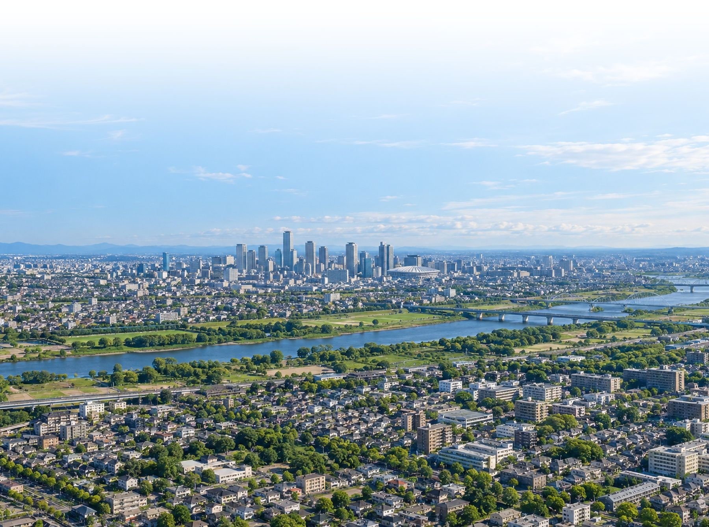
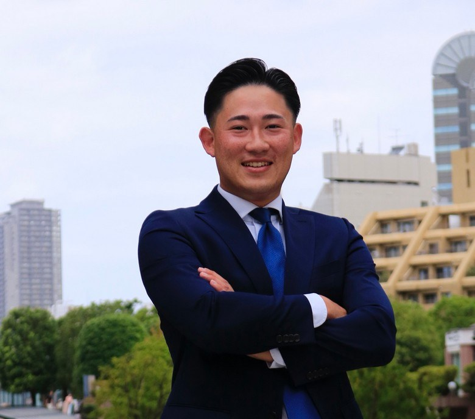

埼玉県さいたま市｜消防士・公安職専門の保険代理店
助ける人を、
助ける。
現場で人を助ける仕事をしている人が、自分と家族の備えで損をしない。
そのための保険代理店です。
消防署の職場に出入りする営業や、家族の付き合いで入った保険。内容を把握しないまま毎月払い続けている方が、現場には少なくありません。
株式会社ResOneは、さいたま市消防局で消防隊・救助隊を経験した代表が立ち上げた保険代理店です。消防職員共済や公務災害補償など、すでに備わっている制度を先に確認し、本当に足りない分だけを保険で埋める。その順番で提案しています。

お知らせ
- 2026年11月
- コラム「共済と民間保険、どこが重なるのか」を掲載しました。
- 2026年11月
- ホームページを公開しました。
- 2026年10月
- 日本生命保険相互会社の取扱いを開始しました（取扱保険会社は生命保険4社・損害保険1社になりました）。
- 2026年3月3日
- 株式会社ResOneを設立しました。
事業内容生命保険・損害保険の募集代理
消防士の勤務と制度を知っているので、「入らなくていい保険」も言えます。
民間の保険を検討する前に、消防職員には確認しておくべき制度がいくつもあります。公務災害補償、消防職員共済、傷病手当、退職手当。これらを一覧にして足りない部分を特定してから、はじめて保険商品の話をします。重複している契約があれば、やめる提案をします。
保障の現状整理
共済・社会保障・加入中の保険証券を並べて、いま何がどこまで出るのかを一枚にまとめます。ここまでは契約の有無に関係なく行います。
複数社の比較と推奨理由の説明
生命保険4社・損害保険1社を取り扱っています。お客様の意向を確認し、複数の商品を比較したうえで、なぜその商品を勧めるのかを説明します。
勤務サイクルに合わせた面談
当番・非番・週休の交替制に合わせて日時を決めます。署の近く、ご自宅、オンラインのいずれでも対応します。
家族の保障と相続の相談
結婚、出産、住宅購入、昇任、退職。それぞれの節目で見直します。配偶者やお子さんの保険、親の相続についての相談も受けています。
ご相談の流れ
代表挨拶代表取締役 津野 巧也
消防署にいた頃、周りのほとんどが、内容を理解しないまま保険に入っていました。
私はさいたま市消防局で約5年、消防隊、その後は救助隊に所属していました。職場に来る営業の勧めや家族の付き合いで契約し、自分の保障を把握していない同僚が本当に多かった。一方で、消防職員には共済や公務災害補償など、民間保険の前に確認すべき制度があります。それを誰も説明していませんでした。
保険の仕事に移ってから約5年、「社会保障と共済を使い切ったうえで、足りない分だけを保険で埋める」提案を続けてきました。埼玉県内の消防士の方々からのご紹介が続いているのは、その積み重ねの結果だと考えています。
2026年3月、株式会社ResOneを設立しました。「助ける人を、助ける。」を、会社としての約束にしていきます。
株式会社ResOne 代表取締役
津野 巧也つの・こうや

- 経歴
- さいたま市消防局 5年
保険代理店 5年
独立（2026年3月 株式会社ResOne設立） - MDRT
- 基準を2年目から毎年達成
MDRT（Million Dollar Round Table）：生命保険・金融サービス専門職の国際組織。年間の営業成績が定められた基準を満たした人のみ入会資格を得られ、世界の生命保険営業の上位数%にあたるとされています。
よくあるご質問
相談だけでも大丈夫ですか。
大丈夫です。保障の現状整理までは契約の有無に関係なく行っています。整理した結果「今のままで足りている」となれば、そのままお伝えして終わりです。
相談は最初から最後まで無料ですか。
無料です。当社の収入は保険会社からの手数料で、お客様から相談料をいただくことはありません。
相談にはどのくらいの時間がかかりますか。
初回は1時間程度を目安にしてください。現状の整理が中心で、その場で契約を決める必要はありません。2回目以降は内容により30分から1時間程度です。
土日・祝日や、当番明けの日でも相談できますか。
できます。非番・週休の日に合わせて日時を決めます。早朝・夕方・休日も対応します。
どのような相談方法がありますか。
対面（署の近く、ご自宅、最寄りの喫茶店など）とオンラインのどちらでも対応します。オンラインの場合はスマートフォンだけで参加できます。
相談のときに必要な持ち物はありますか。
加入中の保険証券（または保険会社からの契約内容のお知らせ）と、共済の加入状況が分かるものがあれば正確に整理できます。手元にない場合はそのままお越しください。後日写真で送っていただく形でも対応します。
すでに職場で別の保険に入っています。見てもらえますか。
はい。加入中の保険証券や共済の資料をもとに、何がどこまで出るのかを一覧にします。重複している部分があればお伝えし、必要なら解約や減額の手続きもご案内します。
共済や公務災害補償があれば、民間の保険は要らないのではないですか。
要らない場合もあります。ただし公的な保障には「公務中のケガ・病気」「在職中」などの条件があり、ご家族の生活費や退職後の備えまでは十分でないことがあります。足りているかどうかはご家族構成・年齢・住宅ローンの有無で変わるため、一度一覧にして確認することをお勧めしています。
家族や子どもと一緒でも相談できますか。
できます。ご家族の保障も一緒に見直すことが多いので、むしろご同席をお勧めします。お子さん連れでも問題ありません。
保険以外のことも相談できますか。
できます。住宅購入、教育費、退職後の生活設計、親の相続など、保険に直接関係のない内容でも構いません。家計全体を見たうえで保障を考えるほうが結果として無駄が減るためです。税務や法律の個別判断が必要な場合は、税理士などの専門家をご案内します。
消防士以外でも相談できますか。
できます。警察官・自衛官など公安職の方、ご家族、ご紹介の方にも対応しています。
特定の保険会社の商品だけを勧められませんか。
生命保険4社・損害保険1社を取り扱っており、お客様のご意向を確認したうえで複数の商品を比較します。推奨する理由を説明したうえで提案します。この進め方は勧誘方針にも定めています。
契約した後の手続きは誰に連絡すればいいですか。
当社にご連絡ください。保険金・給付金の請求、住所変更、異動や昇任に伴う見直しなど、契約後の手続きも当社が窓口になります。
会社概要
- 商号
- 株式会社ResOne（レスワン）
- 代表者
- 代表取締役 津野 巧也
- 設立
- 2026年3月3日
- 資本金
- 100万円
- 所在地
- 〒339-0056
埼玉県さいたま市岩槻区加倉5-5-26 - 電話
- 080-2028-7637
- 事業内容
- 生命保険の募集に関する業務
損害保険代理業 - 取扱保険会社
-
- 東京海上日動あんしん生命保険株式会社
- はなさく生命保険株式会社
- アクサ生命保険株式会社
- 日本生命保険相互会社
- あいおいニッセイ同和損害保険株式会社
お問い合わせ
保険の見直し、新しい保障のご相談、ご家族の保険についてなど、まずはご連絡ください。勤務シフトに合わせて面談の日時を決めます。相談だけで終わってもかまいません。
公式LINEからのご相談が最も確実です
友だち追加のあと、トークに「相談希望」と送ってください。勤務中でも、空いた時間にやり取りできます。
LINEで友だち追加LINE ID検索の場合：公式アカウント「株式会社ResOne」
- 電話
- 080-2028-7637面談中は出られないことがあります。折り返しご連絡します。
お名前、ご所属（任意）、ご希望の面談方法をお知らせください。いただいた個人情報はご相談への対応以外には使いません。